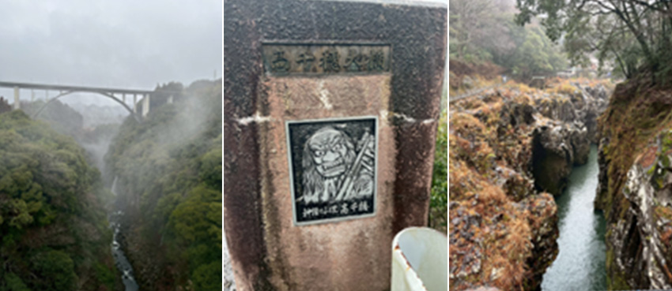

傳說中日本神明降臨的地點，就是「高千穗」。
這裡不僅是日本神話的故鄉，更是九州數一數二的「能量景點」。
從福岡搭巴士直奔神話秘境
「交通」是前往高千穗最要麻煩的部分。最輕鬆、最高效率的交通選擇是從福岡市區搭乘高速巴士。這條路線由「西鐵巴士」與「宮崎交通」共同營運，不需要拖著行李轉車轉到頭暈。
在福岡市區，你有三個主要上車點可以選擇：
1. 西鐵天神高速巴士總站（3 樓 6 號乘車處）
2. 博多巴士總站（35 號乘車處）
3. 福岡機場國際線（10 號乘車處）
這條路線每天有數個班次直達「高千穗巴士中心」，車程大約需要 3.5 小時。單程票價根據季節不同，大約落在 4,060 到 5,680 日圓之間。
這條長途巴士非常熱門，尤其是週末或連假，強烈建議提早一個月上網訂票。
長途巴士上的設備超貼心，通常是 3 排或 4 排座椅，車內配有洗手間、Wi-Fi 和充電插座。我一上車就戴上眼罩，充著電睡一覺，醒來就抵達神話之鄉，完全不用動腦。
交通票券的部分，九州之旅通常會頻繁搭乘巴士，可以計算買一張 SUNQ PASS 是否划算，這張通票可以覆蓋這段長途車資，不用每次掏零錢。
抵達「高千穗巴士中心」後，旁邊就是遊客中心。這裡簡直是自助旅行者的天堂，你可以花 500 日圓寄放沉甸甸的行李箱，也能索取地圖，甚至租借電動腳踏車來場慢遊，租借費每小時約 500 日圓起。
第一站：高千穗—峽划船仰望「日本瀑布百選」
我的第一站便直衝最有名的高千穗峽。這座峽谷是阿蘇火山噴發後的熔岩，經過五瀨川數萬年的侵蝕而成的斷崖絕景。
這裡最標誌性的體驗就是「划小船」。當你划進峽谷深處，近距離仰望高達 17 公尺的真名井瀑布，那種被比喻為「優美白蛇」的水勢噴濺在臉上，真的會讓人瞬間忘記辦公室那些煩人的 Excel 檔案。
一艘划船約 5,100 日圓（限載 3 人），所以單身狗或邊緣人自己來划也沒問題。但最重要的是划船名額有限！請一定要在兩週前到官網預約，否則現場排隊可能會讓你等到懷疑人生，甚至根本買不到票。
划完船後，我沿著旁邊的步道走了一圈。沿途可以看到神話中「鬼八」投擲的 200 噸巨石「鬼八力石」，還有壯觀的柱狀節理斷崖「仙人屏風岩」，大自然的鬼斧神工真的很有療癒力。
 |
餓了就吃：千穗之家的流水麵
在峽谷附近，有一家叫「千穗之家」的店，提供有趣的流水麵。看著麵條順著竹管滑下，考驗你的筷子功力，清爽的口感非常適合夏天或是剛運動完的上班族，儀式感十足。
第二站：能量大補貼—天岩戶神社與天安河原
補充完體力，我搭乘當地的岩戶線巴士（約 20 分鐘車程）前往天岩戶神社。傳說中天照大神因為生氣躲進了「天岩戶」山洞，導致世界失去光明。
這裡最特別的是可以參加神社人員帶領的導覽，帶你隔著河谷遙望神聖的山洞（遙拜所）。雖然不能拍照，但肅穆的氣氛真的會讓人心情沉靜下來。
從神社走路約 15 分鐘，就會抵達我最愛的高能量景點—天安河原。這是一個在溪流旁的巨大洞窟。傳說眾神曾在這裡開會商討對策。洞穴裡堆滿了參拜者許願的小石塔，我也跟著疊了一疊，許願希望今年考績優異、小人退散。
第三站：高千穗小火車—105 公尺高空的雲端體驗
如果不想走路，推薦搭乘高千穗天照大神鐵道。這是由廢棄鐵道改裝的觀光小火車，往返約 30 分鐘。當火車停在 105 公尺高的「高千穗橋梁」上時，駕駛員還會吹泡泡，讓五彩斑斕的泡泡飛向峽谷，那畫面夢幻到不行。因為不能預約，建議早上先去買票，以免買到太晚的班次。
晚餐重頭戲，讓老饕落淚的「高千穗牛」
既然是出來放假，晚餐絕對不能虧待自己。高千穗牛是獲得過「內閣總理大臣賞」的頂級和牛，而高千穗正是它的產地。推薦去農協直營的「高千穗牛餐廳 和」，這裡的品質非常有保障。無論是厚實的牛排還是油脂豐富的燒肉，入口即化的口感真的會讓你覺得這幾個月加班的辛苦都值得了。
 |
夜間限定：高千穗神社的「夜神樂」
吃飽喝足後，晚上 8 點記得去高千穗神社看「夜神樂」。
雖然一場表演大約一小時，演出《手力雄之舞》等四首代表曲目，主要在祈求五穀豐登。看著戴著面具的舞者在鼓聲中起舞，雖然聽不懂古日文，但那種神祕的傳統氣息，確實能讓人暫時遠離現代社會的喧擾。